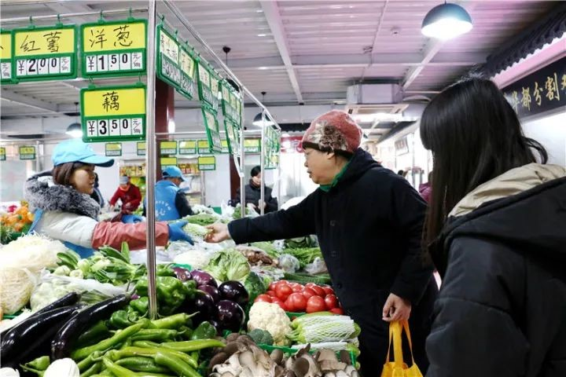
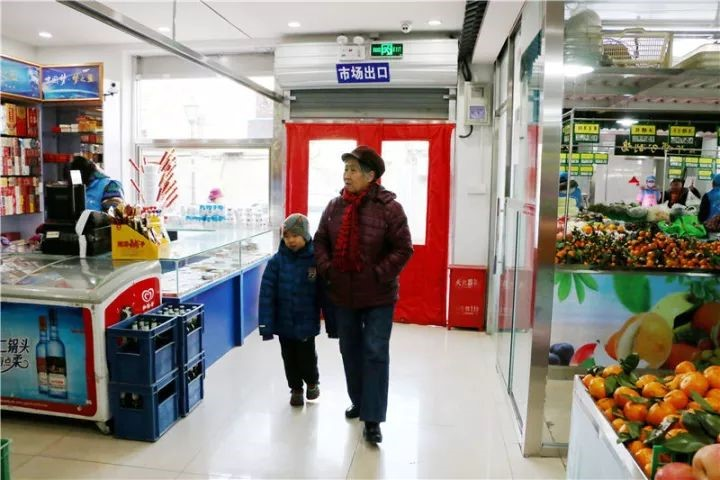
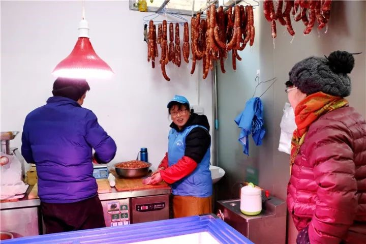
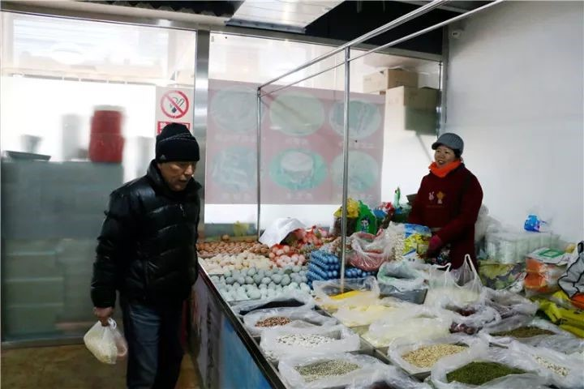
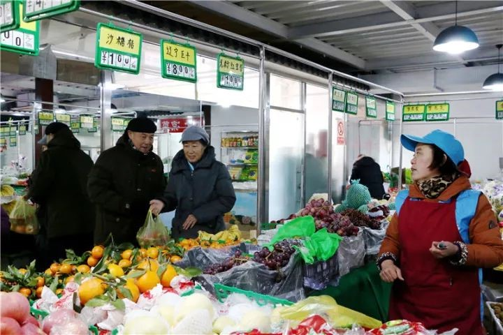
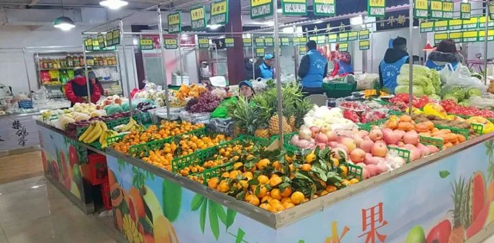
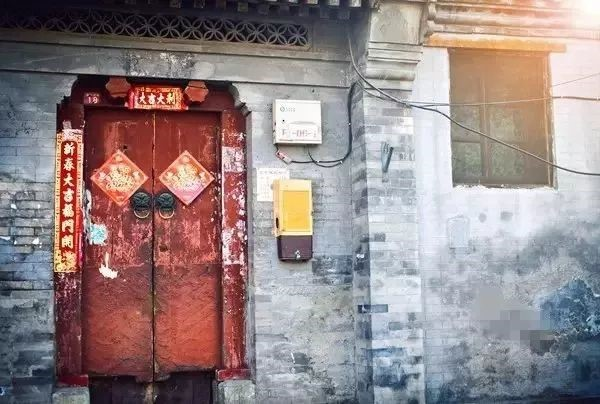

遛弯儿就能买菜，胡同老街坊暖心了
来源：北京东城
12月9日，经过3个月的升级改造，包含蔬菜、水果、熟食、牛羊肉等多种便民服务的交道口街道社区便民服务中心开业。
改造：胡同整治提升便民服务
2017年，交道口街道百街千巷行动如火如荼开展，胡同环境提升了，如何能让老百姓生活更方便呢？
“这一位于方砖厂2号的便民服务中心落成，可以将南锣鼓巷地区都纳入一刻钟服务圈，蔬菜、水果、百货、粮油蛋奶等17类物品，基本满足周边居民的日常需要，惠及一万多居民，尤其是行动不便的老人。”街道负责此项工作的冯志刚表示。此次改造，街道联合相关单位进行了整体规划设计，听取居民需求，严格论证。
3个月升级改造后，环境升级了，设备更新了，服务项目增加了，原来单一的吃饭地儿变成了涵盖17大类便民服务的市场。
便民亲民：老街坊暖心了
300余平米的市场，主体空间是蔬菜、水果区，黄瓜、西红柿、辣椒、茄子一字儿排开，香蕉、柚子、蜜桔琳琅满目，主食厨房是新出锅的馒头、花卷，熟食窗口是热气腾腾的猪蹄，肉类区是新鲜的牛羊肉……
 “以前啊，买菜买东西不方便，大点的超市，要走到交东大街的天客隆，我这腿脚，走不了那么远，胡同里嘛，有一些小商贩，时不时还有流动的，但是价格贵，还不踏实，现在好多啦，家门口就有这么个市场，冬天在里面买菜也暖和，价格还不贵，我一天来几次，吃完了随时买，遛弯儿就把菜买回家了。”家住南下洼子胡同的董妙珍老人露出一脸笑容。
据便民服务中心臧经理介绍，市场蔬菜、水果统一从新发地批发市场运来，质量有保证，同时价格也十分亲民。
规范有序：商户踏实了
便民服务中心落成，暖心的不止是老街坊，还有入驻的商户们。
经营水果区的王大姐是第一批入驻的商户，这几年，从老家来北京做点小生意，王大姐也曾奔波不停。如今，王大姐终于在便民服务中心安了“家”。
“以前做点小买卖，不知换了多少个地儿，没手续，不合规，现在终于落下来了，暖和了，踏实了。”
踏实了，是王大姐最大的感受，和王大姐一样，踏实的还有不少商户。街道在改造便民服务中心时，充分考虑到胡同里商贩的经营问题，让6、7家商贩入驻进来，统一进行规范管理。由于空间划分更合理，也为商户节省了租金，降低了成本。
据冯志刚介绍，从改造之初，街道就进行了统一规范，设计符合胡同风貌，空间合理布局，设备改造升级，从“硬件”上实现规范化。
“软件”上，商户们统一穿着蓝色的背心，食品区工作人员按照规定佩戴帽子、手套，营业时间从早六点到晚八点，价格进行公开明示。
软硬件的规范有序，让老街坊安心了，也让商户踏实了。
仲冬时节的早晨，便民服务中心的便民早点依然热闹，油条、豆腐脑可以坐在屋里舒服的吃，着急的煎饼、豆浆打包带走吃，爷爷奶奶送完孙子上学，拉着小推车，走进市场买些蔬菜瓜果。胡同的早晨，在一抹暖阳中开始。
